위치
유래
루머
탐사선
관련영화

Beyond the Stars: Unveiling the Wonders of Space
우리 은하
우리은하는 막내나선은하로 분류되며 팽대부와 헤일로의 구형구조와 원반구조로 되어 있다.
MARS
태양과의 거리는 1.52 AU
이다.
(태양 - 지구 거리: 1AU)
포보스와 데이모스라는
두 개의 위성이
존재한다.
 태양과의 거리는 1.52 AU이다. (태양 - 지구 거리: 1AU)
태양과의 거리는 1.52 AU이다. (태양 - 지구 거리: 1AU)